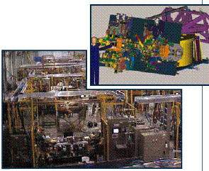

|
KUKA
Esnek Üretim Sistemleri, DaimlerChrysler, Ford Motor ve General
Motors, Harley-Davidson, Dana Corporation, Deere & Company,
TRW, Visteon, Eaton Corporation gibi þirketlerin üretim sistemlerini
saðlayan bir Tier One kuruluþudur.
Verimliliði
ve Ýletiþimi Geliþtiriyor
KUKA'nýn Mekanik Tasarým süpervizörü Rod Bereznicki "Biz
çok çekiþmeli bir iþteyiz" diyor ve ekliyor; "Sürekli
olarak daha etkili ve güçlü bir rakip olmanýn yollarýný araþtýrmaktayýz.
Þu sýralar duvarlarýmýz içerisindeki yaþam döngüsünde iletiþimi
geliþtirme yolunda ilerlemekteyiz. PARTsolutions
da KUKA'nýn geliþme hýzýný ve maliyeti iyileþtirmesi adýna
uygulanan birtakým teknolojilerden biridir."

Bir
tanesi de yukarýda gösterilen otomotiv montaj hattý tasarýmý
için gereken zaman, tasarým prosesinin PARTsolutions'la birlikte
otomasyonu sayesinde azaltýlýyor. Resimde, bir PHD kavrayýcý
Ford's FIDES ve SolidWorks içerisine sokuluyor.
Ýkilem:
Ticari Parçalar Kütüphanesine Etkili bir Yaklaþým
Bereznicki þöyle devam ediyor; "Etkinliklerimizi yeniden
gözden geçirdikten sonra, fýrsatlar tam gözümüze bakýyorlardý.
Bizim tasarým iþimizin önemli bir kýsmý, %30 veya daha fazlasý,
tedarikçilerimizden alýnan ticari parçalarý içermektedir.
Yýllar boyunca kaðýt kataloglardan modellediðimiz satýcý parçalarýndan
oluþan dahili kütüphaneler oluþturduk. Buradaki sorun ise
müþterilerimizin mühendislik verilirimizi bizden her birinde
farklý olarak bulunan CAD sistemlerine (CATIA®, Ford FIDES,
Unigraphics®, SolidWorks® and AutoCAD® gibi) uygun biçimde
istemeleridir. Satýcý kataloglarýný çoklu sistemlere uygun
hale getirmek zaman kaybýdýr ve pahalýdýr. Ayný zamanda bizim
verimiz de deðildir. Biz satýcý parçalarýný modelleyerek para
kazanmayýz."
Azalan
Kütüphane Giderleri
Bereznicki, þunlarý da ekledi; "PARTsolutions'u bulduðumuz
zaman CAD kütüphane giderlerini azaltabileceðimizi ve tasarým
verimliliðimizi arttýrabileceðimizi gördük. PARTsoltions bize
tek bir sistem kütüphanesine sahip olup bütün beþ CAD sistemini
ve dolayýsýyla tedarikçilerin kataloglarýný da destekleyebilmemizi
saðladý."
Geçiþ
Uyumsuzluðu: Kullanýcýlar ne düþünecek?
Bereznicki'nin çekindiði bir sorun da geçiþte yaþanabilecek
bir uyumsuzluktu. Eðer insanlar yeni bir sisteme kolay ve
hýzlý bir þekilde geçemezse, bu durumda sistem kötü bir isme
sahip olacak ve bu yayýlacak. Ama PARTsolutions kullanýldýðýnda
insanlar bunu daha çok istediler. Bugün her tasarým mühendisimiz
PARTsolutions'u düzenli olarak kullanmaktadýr.
-
Tasarým iþlemininin %30'u saatlerden dakikalara indirildi.
- Ticari
nesneler için geliþmiþ sipariþ doðruluðu
- Mükemmel
ve hýzlý kullanýcý kabulu
- Azalan
ticari kütüphane masraflar
Tasarým
Zamanýndan Kazanç ve Tasarým Kalitesinde Geliþme
Kullanýcýlarý KUKA'daki PARTsolutions'ýn kabulüne iten temel
unsur, genel tasarým iþlerini saatlerden birkaç dakikaya azaltarak
tasarým zamanýndan kazanç saðlamasýdýr.
Bereznicki,
"PARTsolutions'ýn yaptýðý kolay montajdýr. Kullanýcý,
hangi parçaya ihtiyaç duyduðu, PARTsolutions'ýn onu montajlamasý
ve CAD sisteminin içine yerleþtirmesi hakkýndaki üç veya dört
soruya cevap verir. Bunu yapmanýn kolaylýðý da zamandan büyük
bir kazanç saðlar" diye belirtti.
"Biz
þimdi PARTsolutions'da bizim çekirdek ticari ürünlerimizin
%80'ine sahibiz. PARTsolutions'dan önce onlarý biz kendimiz
modelliyorduk."
Ayrýca,
kullanýcýnýn seçim sürecinin erken aþamalarýnda gölgeli bir
imaj görebilmesiyle, PARTsolutions KUKA'ya parça seçimlerinin
daha iyi tasarlanmasý konusunda yardýmcý olmuþtur. Bereznicki
" Onu ilk aþamada görselleþtirebilirsiniz. Biz artýk
satýcý parçalarýnýn modellenmesine deðil, kendi iþimizi yapmaya
odaklanabiliyoruz" þeklinde açýkladý.
Doðru
Parça Komutu Verme
"En önemli sonuçlardan biri hatalý parça komutu vermedeki
azalmadýr. "PARTsolutions, seçili montajý tarif eden
bir parça numarasý saðlar ve BOM'u otomatik olarak doðru parça
numarasýna yerleþtirir. Bu da pek çok tuþlama hatasýný ortadan
kaldýrýr" diyen Bereznicki þöyle devam ediyor; "Doðru
parça numarasý bize yalnýzca doðru komutu vermede yardýmcý
olmakla kalmaz, tüm akýþý etkiler. Hatalar yüksek üretim maliyetlerine
yol açabilir. Mühendislikte doðruluk çok önemlidir."
Tedarikçi
Kazançlarý
Bereznicki, tedarikçilerin KUKA'nýn PARsolutions kullanýmýndan
pek çok kazanç elde ettiklerini vurguladý. "Mühendislerimiz,
kütüphanedeki eriþebilirliðe dayalý olarak hangi parçalarýn
satýn alýndýðý konusunda kararlar alýrlar. Eðer bir satýcýnýn
verilerine kolaylýkla ulaþýlabiliyorsa, o zaman onlarý kullanýrýz.
Örneðin, biz pek çok PHD parçasý kullanýyoruz çünkü onlarýn
parçalarý sistemin içerisinde bulunuyor".
Bereznicki,
satýcýlara saðlanan katalog gibi daha birçok avantaj sýraladý.
"Aramýzdaki fark, bir satýcý parçasýný bizim modellememiz
ile satýcýnýn modellemesi arasýndaki fark þu; ben yalnýzca
kullanacaðým parçayý modelliyorum tüm katalogu deðil. Bu da
demek oluyor ki, biz onlarýn sunacaklarýndan yalnýzca bir
gruba odaklanýyoruz, ve onlarýn diðer gruplarýný asla görmeyeceðiz.
Ayrýca, satýcý kataloglarý, parçalarý biz kendimiz üretseydik
olacaðýndan daha fazla detay içeriyor. Ýlave detaylar, bizim
modeli doðru olarak bilmemiz halinde daha sýký koþullara göre
tasarým yapmamýza imkan sunuyor".
Bereznicki,
"Pazarlama stratejisi kadar, bu da, tedarikçilerin yol
almasý için gerekli" diyerek baðladý.
 Ýrtibat: Ýrtibat:
Birol
YAMAN
Ürün Yöneticisi
by@cpv-systemhaus.com
CPV Bilgi Teknolojileri Üretimi ve Danýþmanlýk Ltd. Þti.
PERPA Ticaret Merkezi A Blok Kat:11 No:1398
34384 Þiþli Ýstanbul
Tel: (212) 320 40 22
Faks: (212) 320 40 25
www.cpv-systemhaus.com
|